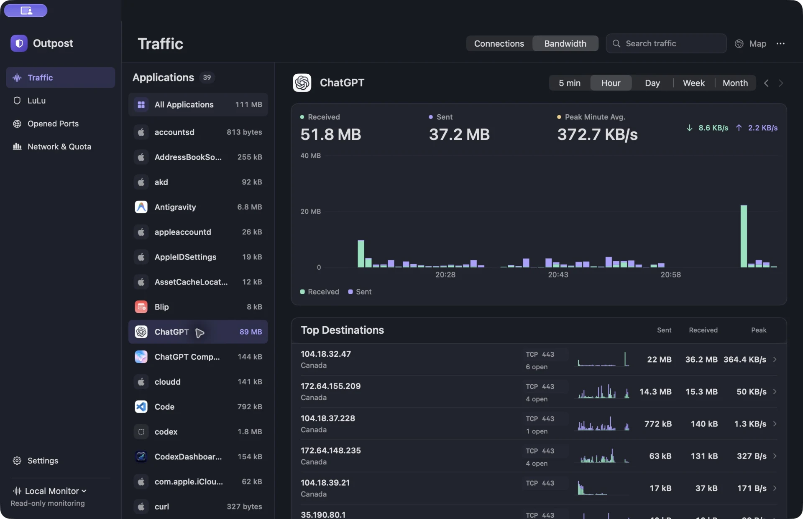
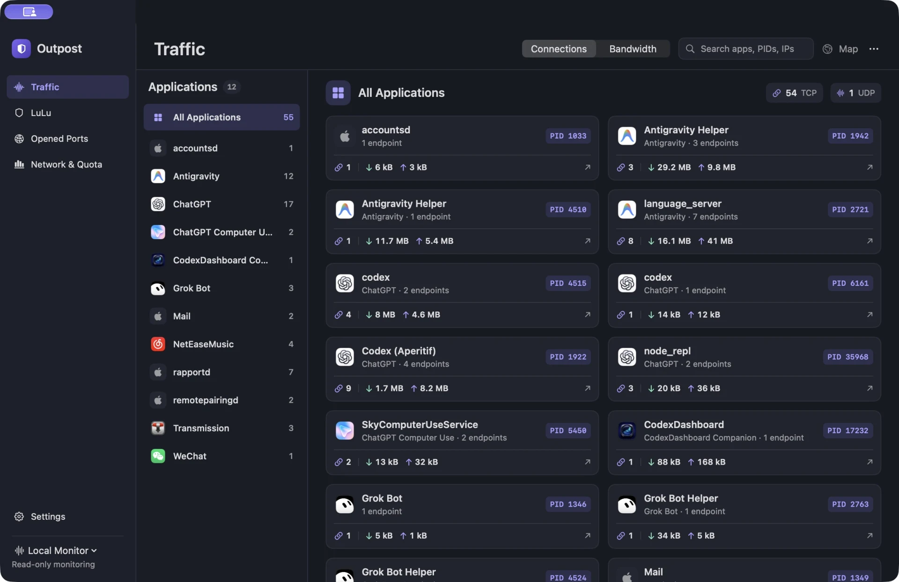
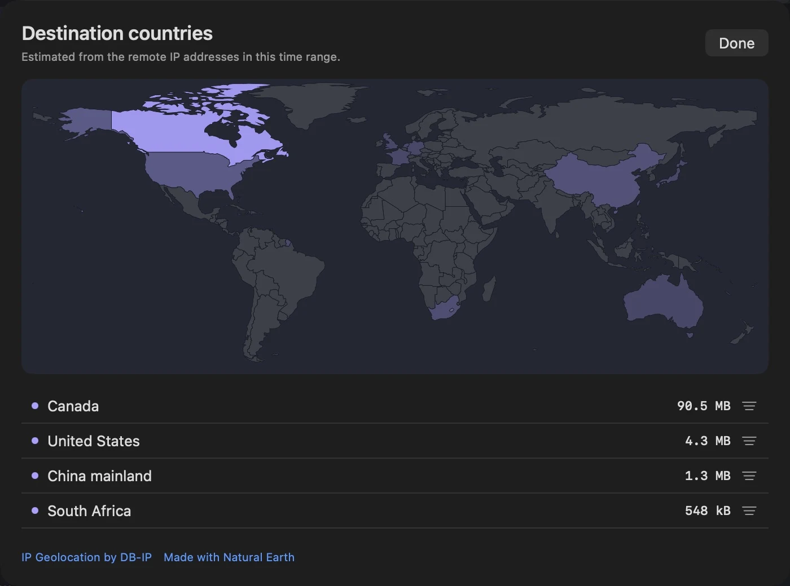

Network monitor for Mac
See where your Mac connects.
Inspect per-app connections, browse bandwidth history, and track your network usage.
macOS 15 or later Apple silicon and Intel



Features
From a glance to the details.
Check live transfer rates in the menu bar. Open the app to see the connections behind them.
- Active connections
- See TCP and UDP connections grouped by app and process. Inspect destinations, protocols, and open socket counts.
- Bandwidth history
- Review upload and download totals over time. Find top destinations, view estimated countries, and export the data as CSV.
- Network usage and quotas
- Track Wi-Fi and Ethernet usage and set monthly quotas for a network or across all networks.
- Opened ports
- See which processes own listening ports and which ports are reachable only on your Mac.
Requirements
Outpost for Mac
Requires macOS 15 or later. Runs on Apple silicon and Intel Macs. Recorded bandwidth history stays on your Mac.
View releases